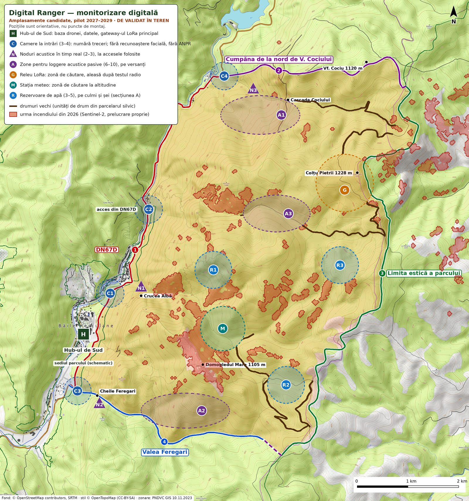

Secțiunea B aplică pe cei 3.305 ha ai zonei Domogled ideea de bază a proiectului: sateliții urmăresc zona în mod continuu și gratuit, câțiva senzori și o dronă cu termoviziune verifică ce văd sateliții, iar oamenii decid, pe aceeași hartă. Monitorizarea urmărește toate amenințările din zonă: incendiul, tăierile, accesul neanunțat, braconajul și schimbările de habitat.
| Întrebarea | Ce vedem, cât de repede și cât de sigur, despre tot ce se întâmplă în zonă? |
|---|---|
| Conținut | Satelit gratuit, dronă cu termoviziune, senzori acustici, camere la intrări, jurnal de evenimente |
| Rezultat în 2029 | O metodă de monitorizare testată trei sezoane, cu capabilitățile și limitele măsurate |
| Cine folosește | Administrația parcului, ocolul silvic, Garda Forestieră |
Întâi stratul gratuit, zilnic
Instrumentele gratuite se aplică pe conturul zonei din prima lună a pilotului. Fiecare alertă intră în jurnalul de evenimente și e triată de un om. Imaginile comerciale de mare rezoluție se cer doar la un eveniment concret, nu prin abonament.
| Sursă | Ce aduce în pilot | Limită |
|---|---|---|
| NASA FIRMS (VIIRS, MODIS) | Alerte termice automate pe conturul zonei | În 2026 a raportat focul după patru zile și nu a văzut mocnirea |
| EFFIS | Prognoza pericolului de incendiu, suprafețe arse | Rezoluție regională; se calibrează cu stația locală |
| Sentinel-2 | Refacerea pădurii, tăieri, drumuri noi, zăpadă | Nori; 10 m |
| Sentinel-1 (radar) | Schimbări de structură, prin nori | Interpretare dificilă în relief abrupt |
| Global Forest Watch | Alerte de defrișare pe conturul zonei | Confirmare la sol obligatorie |
| FireSat | Detecție de foc mai fină, anunțată din 2027 | De verificat la lansarea serviciului |
Peste el, puține echipamente
Echipamentele sunt cele ale pilotului, nu ale unei rețele pentru tot parcul. Toate amplasamentele de mai jos sunt candidate, de validat în teren: fiecare punct primește o fișă (proprietar, zonare, acces, alimentare, acoperire radio, risc de vandalism, responsabil de mentenanță) și, în protecția strictă și integrală, aprobare scrisă.
| Echipament | Câte | Unde (candidat) | Ce face |
|---|---|---|---|
| Hub-ul de Sud | 1 | Sediul parcului, Băile Herculane | Baza dronei, nodul de date, gateway-ul LoRa principal, masa de briefing |
| Dronă cu termoviziune | 1 | Pleacă din hub | Harta focului, verificarea termică după stingere, survol termic în zilele cu risc, ortofotoplanul anual |
| Loggere acustice pasive | 6–10 | Versanți deasupra Văii Cociului, a Văii Feregari și a drumurilor vechi, nu lângă apă curgătoare | Înregistrează după program; se descarcă lunar; biodiversitate și antrenarea modelelor |
| Noduri acustice în timp real | 2–3 | Accesele cele mai folosite | Transmit un scor, ora și poziția, nu sunet continuu |
| Gateway-uri LoRaWAN | 1–2 | La hub și un releu cu vizibilitate spre văi, ales după testul radio | Duc alertele senzorilor până la hub |
| Camere la intrări | 3–4 | Plecarea traseelor spre Crucea Albă, accese din DN67D pe drumurile vechi, Cheile Feregari, Valea Cociului | Numără trecerile; semnalează prezența în zilele cu risc. Fără recunoaștere facială, fără ANPR |
| Stație meteo | 1 | Un punct la altitudine, reprezentativ pentru crestele care au ars | Buletinul de vreme și pragurile locale de pre-alertă |
| Rezervoare de apă | 3–5 | Culmi și șei lângă drumurile vechi și lângă suprafețele arse | Apă pentru echipele de la sol (secțiunea A), trecute pe harta comună |


Jurnalul de evenimente
Orice detecție (satelit, senzor, cameră, dronă, raport din teren) devine un punct pe harta comună, cu sursa, ora, nivelul de încredere, decizia luată și rezultatul. Nu cere o platformă nouă: e un strat în proiectul QGIS/QField al parcului și o regulă de completare. Detalii pe pagina Jurnal și rezultate.
Detecția fumului: de evaluat, nu promisă
În 2026 focul a fost văzut de un om din prima zi. O cameră de detecție a fumului ar ajuta pentru focurile pe care nu le vede nimeni: noaptea, în zilele de sărbătoare, pe versanții ascunși. În 2027 se face o analiză de vizibilitate pe modelul de relief. Dacă un punct vede o parte mare a zonei, camera se testează în sezonul 2028; dacă nu, se renunță.
Ce nu intră în pilot, deliberat
- stații automate de dronă;
- portaluri ANPR și bariere;
- dispecerat 24/7;
- aplicația publică pentru turiști;
- rețeaua de 100 de senzori.
Pe 3.305 ha cu un singur drum public, pe latura de vest, ar costa mai mult decât problema pe care o rezolvă. Rămân în viziunea de extindere după 2029.
Cum se judecă la final
La sfârșitul lui 2029, fiecare tehnologie primește un verdict scris: o păstrăm, o extindem sau renunțăm la ea, pe baza datelor din trei sezoane. Extinderea la scara parcului se propune numai pentru componentele care au trecut testul.
Pilotul 2027–2029
Hub-ul de Sud, modul de lucru fără dispecerat, calendarul monitorizării, indicatorii și riscurile.
Deschide →Tehnologii
Satelit, drone, LiDAR, senzori acustici, conectivitate, camere. Pe fiecare pagină: ce se folosește în pilot și ce nu.
Deschide →Scenarii
Zece situații din zona Domogled și cum reacționează pilotul, cu mijloacele lui.
Deschide →